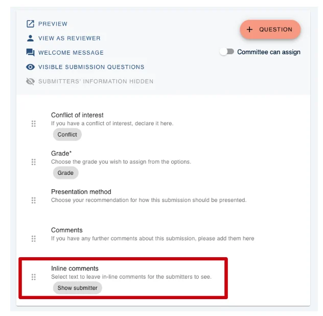
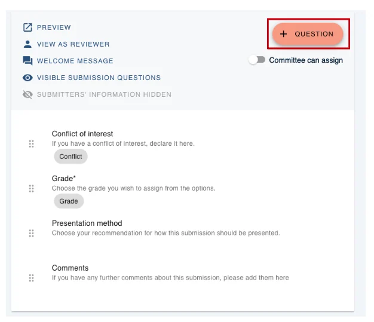
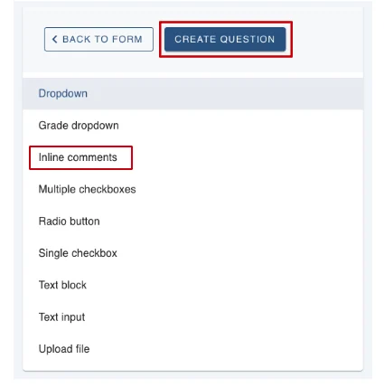
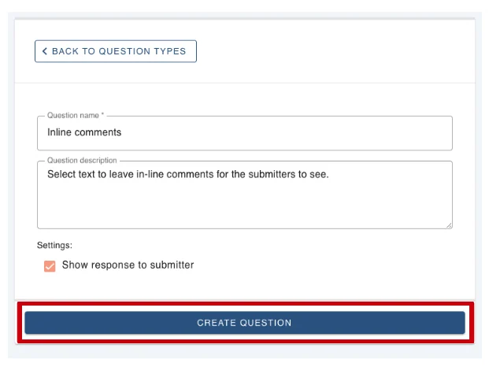
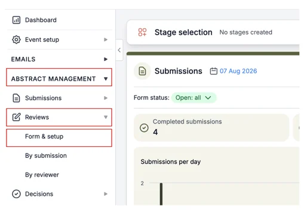
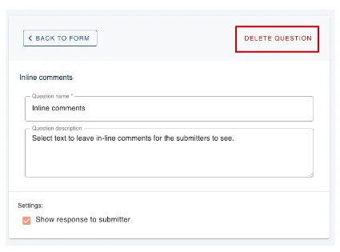
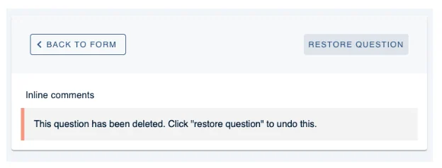
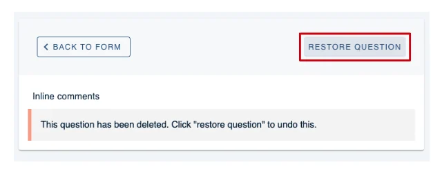

Turning inline comments on and off
Learn how to enable and disable Inline Comments with our step by step guide.#
This information is for Admins ONLY.
If you are a submitter and would like to know more about Inline Comments please read this article.
If you are a reviewer and would like to know how to leave an Inline Comment then please read this article.
Skip to:
How to see if Inline Comments are enabled
How to disable Inline Comments
NB: Inline Comments are automatically set up for events.
To see if they are visible to your reviewers, from your Dashboard click on Abstract Management, then click Reviews and Form & Setup.
On the next screen, you will see what is on your form for Reviewers to complete.
Inline Comments should be found here.

How to enable Inline Comments
If Inline Comments are not visible and you would like to add Inline Comments, please click on the + Question to the top right of your screen (see below).

On the next screen click on Inline Comments and then click the Create Question button.

On the next screen click the Create Question button.

Inline Comments are now enabled.
How to Disable Inline Comments
From your Dashboard, click on Abstract Management, then click Reviews and Form & Setup.

On the next screen, click on Inline Comments.

Then click on Delete Question at the top right of the form.

You will then see the following screen telling you, you have deleted Inline Comments.

If this was a mistake you can click Restore Question, to enable Inline Comments again.

Should you require any further assistance, please contact our support desk via our Contact Form.
Did this page solve it?
Thanks — this helps us fix it.
Didn't solve it? Ask our support team
No question is too small, and there's no charge for asking. Raise a ticket and someone who knows the software will pick it up.